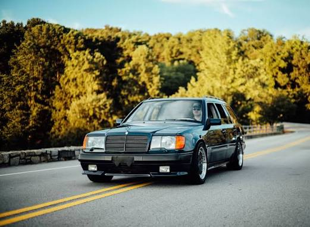
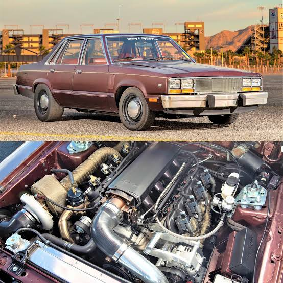

Home
Sneaky Crocodile Customs builds sleepers: cars that look stock from the curb but hide serious performance under the hood. Every build is custom-tailored to the owner, from mild street upgrades to full engine swaps.
Why a Sneaky Crocodile?
- Fully custom builds designed around your goals
- Factory-quality fit and finish
- Dyno-tuned and road-tested before delivery
- 12-month warranty on all workmanship

Services
Pick a single upgrade or combine them into a complete package.
| Service | Includes | Starting At |
|---|---|---|
| Engine Swaps | Sourcing, install, wiring, tuning | $12,000 |
| Forced Induction | Turbo or supercharger kits, fuel upgrades | $6,500 |
| Suspension & Brakes | Coilovers, big brake kits, alignment | $3,000 |
| Custom Interiors | Seats, upholstery, gauges, audio | $2,500 |
| Paint & Wrap | Full respray, vinyl wraps, ceramic coating | $4,000 |
Builds
A few of our favorite recent projects.
The Grocery Getter
A family station wagon with a twin-turbo V8 swap. 650 horsepower.
The Accountant
A beige commuter sedan with an all-wheel-drive conversion, built transmission, and track-ready suspension.

The Swamp Runner
A lifted pickup with long-travel suspension, a supercharged V8, and our signature crocodile-green interior stitching.

About
I started Sneaky Crocodile Customs because I always thought some of the coolest cars were the ones that were seemingly normal until you popped the hood. Theres nothing cooler than a regular grocery getter or family vehicle that shreds pavement when no one expects it to. I have a passion for creating unique, high-performance vehicles that turn heads and deliver exceptional driving experiences.
We work closely with every customer, from the first sketch to the final dyno run, so the finished car is exactly what you imagined.
Our Process
- Consultation: Tell us about your car and your goals.
- Design: We plan the build and give you a detailed quote.
- Build: Our team gets to work, with progress updates along the way.
- Tune & Test: Every car is dyno-tuned and road-tested.
- Delivery: You drive away in something sneaky.
Contact
Ready to start your build? Get in touch for a free consultation.
Shop: 123 Bayou Road, Charlotte, NC
Phone: (555) 012-3456
Email: builds@sneakycrocodile.example
Hours: Monday through Friday, 8am to 6pm; Saturday, 9am to 2pm